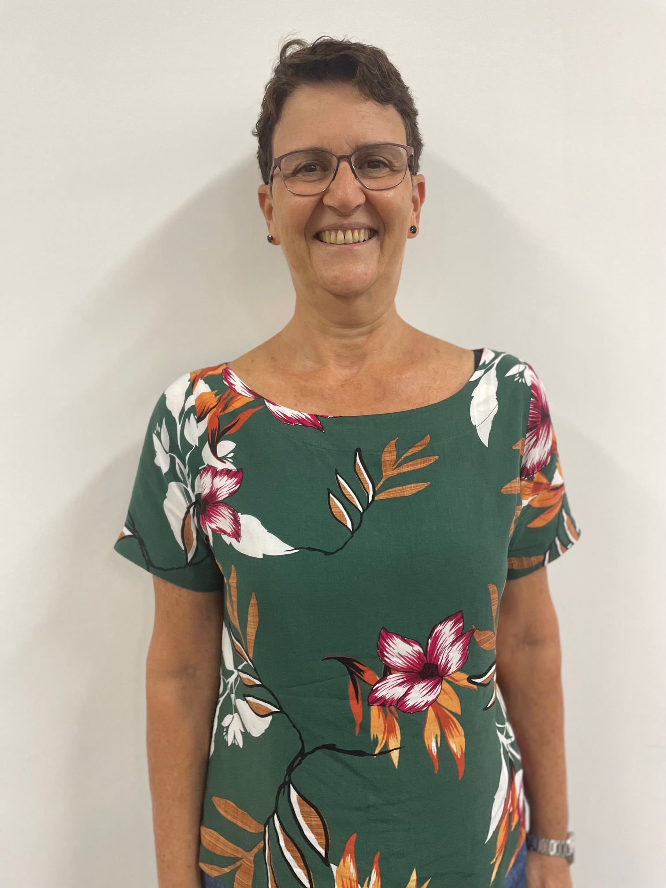

Começo este texto parabenizando o curso de Matemática, particularmente a habilitação de Licenciatura em Matemática do Instituto de Matemática e Estatística da Universidade Federal da Bahia, que completou 80 anos em 2023. O curso, desde seu início, na Faculdade de Filosofia da Bahia, em 1943, vem se aprimorando e se (re)estruturando para atender às demandas dos/as novos/as alunos/as e das novas Diretrizes da Educação, buscando assim acompanhar os contextos históricos, culturais e sociais do novo século.
Mas comemorar 80 anos de curso requer relembrar e resgatar suas histórias, os “sujeitos” que dela participaram, assim como traçar metas para o caminhar futuro. Nesse sentido, escolhemos tirar do anonimato, do silêncio, da invisibilidade as mulheres que articularam e fundaram o Instituto de Matemática, espaço do qual hoje a sociedade baiana usufrui e se orgulha.
Portanto, falar da história da construção e consolidação dos estudos matemáticos, na Bahia, nos remete à fundação da Faculdade de Filosofia da Bahia — FFBA (1941) e à fundação do Instituto de Matemática e Física da Universidade da Bahia — IMF/UBA (1960). E, sendo assim, chegamos às professoras Arlete Cerqueira Lima, Martha Maria de Souza Dantas e todas as outras docentes1 que se juntaram a elas com o intuito de consolidar e manter o novo espaço. Mulheres que, apesar de terem histórias de vida tão diferentes, se uniram em busca de um ideal comum — fundar um Centro de Estudo Matemático na Universidade da Bahia.
As matemáticas baianas vivenciaram um momento histórico de transformações econômicas, sociais e políticas na Bahia da década de 40 do século passado e, de forma inusitada, protagonizaram uma história surpreendente, envolvendo mulheres e a matemática, área considerada tradicionalmente como associada ao masculino.
Até aquele momento, o ensino secundário esteve nas mãos dos intelectuais, bacharéis em economia e engenheiros, pois,
Tanto médicos quanto engenheiros e advogados [...] gozavam de prestígio pela origem social e pela formação educacional. O diploma gerava capital cultural e possibilidades profissionais na área de especialização, assim como no jornalismo e em órgãos públicos. A magistratura e o magistério secundário e superior constituíam campo preferencial de atuação. (Silva, 2000, p. 102).
Portanto, era um privilégio, na época, atuar no magistério secundário, mas, com o passar dos anos, a Bahia começou a participar do movimento de industrialização e modernização que se fazia presente na sociedade. Neste sentido, os homens começaram a mudar a direção de sua formação cultural e interesses profissionais e passaram a buscar novos caminhos na indústria, na construção de rodovias e portos, na perfuração de poços de petróleo, enfim, estavam buscando atuação em atividades mais promissoras do ponto de vista econômico. Essa mudança de perfil da atuação masculina no mercado de trabalho provocou um déficit no setor do magistério secundário. Era preciso preparar pessoas que pudessem preencher as vagas docentes que se encontravam ociosas e, principalmente, alcançar uma melhor qualificação no ensino secundário.
A fundação da FF, idealizada pelo professor Isaías Alves, em 1941, tinha como um dos objetivos formar profissionais para atuarem neste espaço deixado vazio que se encontrava muito precário na época. Os cursos de graduação da FF começaram a funcionar em 15/03/1943, entre eles, o curso de Matemática. Ocorreu, portanto, nesse período, a institucionalização da formação de docentes para aturem no ensino básico e ensino secundário, momento caracterizado como um divisor de águas na formação docente: saiu de cena o professor engenheiro e começou a atuação definitiva do/a profissional professor/a de matemática com formação didática e pedagógica na área.
Esse momento também proporcionou oportunidade para muitas mulheres que idealizavam romper com alguns estereótipos sociais e alcançar alguma estabilidade financeira.
As mudanças sociais que a industrialização e a urbanização crescente estavam favorecendo, [...] levaram as mulheres a vislumbrar no magistério um espaço profissional que se adequasse ao que delas se esperava em termos sociais e aquilo de que realmente precisavam para ir ao encontro de um futuro com mais independência e menos opressão. (Almeida, 1998, p. 74).
Além disso, houve oportunidade para as mulheres que adoravam matemática e se sentiam entusiasmadas com os desafios numéricos propostos, de ingressarem no curso e aprimorarem conhecimentos. Nas palavras da professora Arlete2:
Sempre estudei com entusiasmo. Decidi fazer o curso de matemática, depois que passei a trabalhar com a famosa “banca”. Foram tantos estudantes que procuravam as aulas particulares que fui admirando e aprendendo, pois como dizem: Quem sabe faz, quem não sabe ensina!! Então eu fui refazendo minha base matemática para dar aula. (Entrevista, 2023).
Assim como Arlete, inúmeras mulheres ingressaram no curso de Matemática oferecido na FF e o concluíram. Tanto que o quantitativo de mulheres que frequentou o curso de Matemática na Bahia é inusitado para as concepções patriarcais vigentes na época, constituindo um índice diferenciado e inovador em relação às mulheres na matemática.
Particularmente, de 1945 a 19683, formaram-se no curso de matemática 118 estudantes (Licenciados e/ou Bacharelados), sendo 84 mulheres e 34 homens. De 19694 a 19805, formaram-se 188 estudantes, sendo 121 mulheres e 67 homens. Em várias formaturas, o número de mulheres foi superior ao número de homens e, em algumas, formaram-se apenas mulheres, a exemplo de 1965 quando nove mulheres receberam o diploma de licenciadas em Matemática. (Menezes, 2019, p. 118).
Segundo depoimento da professora Arlete (2013):
As mulheres que faziam o curso de matemática visavam o ensino secundário, todas precisavam trabalhar, eram todas da classe média. [...] Tínhamos um entusiasmo muito grande no curso; além disso, a profissão facilitava a condição de vida profissional e familiar.
Essa fala revela condicionantes impostas social e culturalmente à trajetória de vida das mulheres, qual seja Gênero/Classe Social e Gênero/Carreira, fatores muitas vezes determinantes no momento das escolhas profissionais. Arlete revela, também, o grande entusiasmo das mulheres que frequentavam o curso de Matemática, mostrando, mais uma vez, o falso mito de que as mulheres não gostam da matemática.
Os homens, todos que tinham tendência para a matemática, iam para a engenharia. Só aqueles que perdiam o vestibular para a engenharia, para não ficarem “vadiando”, faziam matemática. Mas esses homens estavam ali só interessados nas disciplinas para o vestibular de engenharia, a matemática era o trampolim. Então as mulheres eram muito melhores alunas que eles (os homens), porque elas estavam ali por um ideal. (Entrevista, 2013).
Esse ideal levou essas mulheres a quebrarem o mito e a ingressarem como estudantes no curso de graduação em Matemática e, depois de formadas, continuarem lutando para aprimorar seus conhecimentos e trazer, para a Bahia, a nova Matemática Moderna que surgia, transformando assim toda a estrutura matemática vigente até aquele momento. Como argumenta Sandra Harding (1993, p. 15), “o empreendimento científico é estrutural e, simbolicamente, integrante dos sistemas de valores da cultura”, ou seja, a ciência está baseada num construto histórico/cultural/temporal que mantém uma estrutura de padrões diferenciados para homens e mulheres, incluindo concepções “definidoras de posturas eminentemente masculinas” (Chassot, 2004, p. 47).
Como falamos anteriormente, entre as alunas do curso de Matemática, duas começaram a buscar novos caminhos para se desenvolverem profissionalmente e alcançarem melhorias na qualidade do ensino matemático praticado na universidade baiana — ARLETE CERQUEIRA LIMA e MARTHA MARIA DE SOUZA DANTAS.
Neste artigo, em especial, vamos homenagear a professora ARLETE, articuladora e fundadora do IMF e Primeira Mestra em Matemática da Bahia.
Escrever sobre a trajetória profissional da Professora Arlete sob a perspectiva de gênero é importante, pois
Torna-se [...] fundamental que as/os aspirantes às carreiras científicas tenham conhecimento das contribuições de mulheres que, contrariando as representações do senso comum, elevaram seus gritos de luta e fizeram suas vozes ecoarem nestes espaços recheados de androcentrismo. Mulheres que participaram efetivamente do fazer científico como “sujeitos” e produtoras de conhecimento. Mulheres que precisam ser vistas como “modelos de referência” para as futuras gerações. (Menezes, 2020, p. 48).
Além disso, precisamos lutar por equidade nas relações de integração e respeito para com a diversidade cultural e social característica da nossa sociedade e criar um elo entre o espaço matemático e sua história.
Arlete nasceu no dia 27 de agosto de 1932 em Itabaiana, município de Sergipe. Filha de Auto José de Jesus e de Silvina Vieira de Jesus. É a filha caçula do casal. A família era composta de 7 mulheres e três homens. Segundo suas lembranças,
A família vivia de acordo com o lema: “todos por um e um por todos”. Coincidência ou trabalho dos Deuses as 7 Jabuticabeiras e as 7 meninas eram exuberantes cada uma a seu modo, comungavam o entusiasmo pela natureza ou pela vida. Coincidência, magia ou trama dos Deuses? “SETE”. (Entrevista, 2013).
Ela relembra as sete jabuticabeiras que existia no sítio da família e que cresciam juntas com as sete meninas. A união das sete meninas era fundamental para enfrentarem os desafios comuns à vida no agreste nordestino, principalmente para uma família com baixos recursos financeiros.
Meu pai, que era um analfabeto funcional, trabalhava na pequena cultura de subsistência, cultivando feijão, batata, cebola, alho, aipim, inhame, etc. Aos sábados, ele levava as sobras dos alimentos cultivados no sítio para serem vendidas na feira local e com o dinheiro obtido, eram comprados, às vezes trocados, por outros alimentos para consumo da família, como a carne e o requeijão. Apesar desta situação aparentemente de pobreza, digo aparente, porque nós não passávamos fome, tínhamos uma boa alimentação. [...] Nós éramos felizes, vivíamos bem! (Entrevista, 2013).
Os irmãos homens de Arlete, desde muito jovens, deixaram o sertão em busca de trabalho nas cidades grandes. Fato ainda comum nos dias atuais, os homens saem de suas cidades em busca de melhores condições de sobrevivência, e as mulheres ficam no local, cuidando da pequena lavoura. Essa questão relaciona as categorias de gênero e classe social, pois, segundo Heleieth Saffioti (2009, p. 19):
As classes sociais são, desde sua gênese, um fenômeno gendrado. Por sua vez, dezenas de transformações no gênero são introduzidas pela emergência das classes sociais. Para amarrar melhor esta questão, precisa-se juntar o racismo. [...] Não se trata de somar racismo + gênero + classe social, mas de perceber a realidade compósita e nova que resulta desta fusão. [...] Não se trata de variáveis quantitativas, mensuráveis, mas sim de determinações, de qualidades, que tornam a situação destas mulheres muito mais complexa.
Arlete tinha aproximadamente quatro anos quando teve que se mudar com a família para Aracaju, devido à presença constante de Virgulino Ferreira da Silva, conhecido como Lampião, o rei do cangaço. Em uma dessas passagens pela Serra de Itabaiana, Lampião pediu abrigo no sitio de seu Auto, mas este negou a proposta e, em contrapartida, Lampião o ameaçou: “O senhor tem sete filhas, lembre-se disso”. Seu Auto, pai de Arlete, ficou muito apreensivo e, rapidamente, saiu da cidade.
A mudança para Aracaju inicialmente trouxe inúmeras dificuldades, pois a família era numerosa e as condições na cidade grande são mais onerosas que no interior. Nesta cidade, Arlete estudou inicialmente no Grupo Escolar General Valadão e depois no Colégio Ateneu Sergipense.
Por volta dos quatorze anos, a família tornou a se mudar, desta vez o destino foi Salvador. A irmã Odete, já morando e trabalhando em Salvador, proporcionou a mudança da família. Começou, assim, uma nova etapa na vida de Arlete, ela precisava trabalhar para ajudar nas despesas.
Nessa época, a profissão aceitável para as mulheres era o magistério, mas Arlete não tinha formação para atuar nas escolas oficiais, então começou a aproveitar as oportunidades das aulas particulares (as chamadas “bancas”), inicialmente “foram aulas de latim, de francês, de inglês, português, matemática e tudo que aparecia. Eu ficava apreensiva, pois não tinha tanto domínio, mas Odete me ‘empurrava’ e eu ia me virando. Deu certo! Eu fui a “primeira chutadora da Bahia” — diz Arlete (Entrevista, 2013).
Com o passar do tempo, Arlete escolheu atuar apenas com as aulas particulares de matemática e, assim, ensinava e fortalecia seus conhecimentos. É o começo da sua escolha profissional.
Em 1951, ela realizou, com aprovação, o vestibular para Matemática. Durante os quatro anos no curso, ela se empenhou e realizou sua formação em Licenciatura em Matemática, formando-se em 1954. Em janeiro de 1955, foi aprovada em concurso para professora do Estado, sendo designada para atuar no Ginásio da Bahia, conhecido como Colégio Central. Em suas palavras: “Eu estava entusiasmada para assumir meu cargo de professora secundária”. Para uma jovem recém-formada, vinda do agreste nordestino, essa aprovação em concurso público era uma grande vitória, a oportunidade de melhorar as condições de vida.
Nesse período, Arlete ainda não tinha a visão acadêmica de realizar pesquisa cientifica, campo ainda incipiente na Bahia:
Existia o curso de bacharelado, mas poucas se interessavam. Eu mesma me matriculei, mas desisti. O curso de bacharelado, na época, não era atrativo, os professores eram fracos. Eu precisava ganhar dinheiro, precisava continuar dando aulas particulares. As mulheres visavam o ensino secundário, não havia essa perspectiva de ensino no curso superior. (Entrevista, 2013).
A visão de Arlete começou a mudar quando participou do I Congresso de Matemática para o Ensino Secundário, realizado em Salvador, em 1955. Evento idealizado e concretizado pela professora de matemática Martha Maria de Souza Dantas, futura amiga de Arlete na luta pela fundação do Instituto de Matemática da Universidade da Bahia.
O evento contou com a participação de professores e professoras de vários Estados do país. Foi um momento de integração, trocas e inúmeras discussões acerca da qualidade e do aprimoramento do ensino matemático. Entre os convidados, esteve presente o já renomado professor/pesquisador de matemática da Universidade de São Paulo (USP) Omar Catunda6. Na visão de Arlete, o professor Catunda já era um ícone da matemática naquela época:
Ao vê-lo, na mesa de abertura do Congresso, [...] tomei um susto: Omar Catunda era vivo? Nas minhas aulas de cálculo, o seu nome era frequentemente citado, [...] imaginava-o um vivente do século passado! Mas ele estava ali, falando aos professores. (Lima, 1985, p. 42)
Ao visitar a FF da Bahia e verificar a situação do curso de Matemática da Instituição, que contava, na época, com apenas quatro professores, todos com idade já avançada, Omar Catunda ofereceu uma bolsa de estudos na USP para a professora Arlete. Inicialmente, ela não aceitou devido à empolgação com suas atividades no Colégio da Bahia. Mas o professor Catunda continuou insistindo e incentivando o convite e, dois anos depois, em 1957, Arlete decidiu aceitar o convite para passar um período de estudos na USP.
Nesse primeiro período na USP, a jovem Arlete enfrentou muitas dificuldades em relação aos conteúdos matemáticos novos, defasagem de conhecimentos, pouca base teórica, pouco dinheiro para se manter, enfim, foi um ano difícil:
Ao começar seus estudos na USP em 1957, Arlete sofreu com o choque de nível educacional entre o que se ensinava aqui na Bahia e o que estava sendo ensinado em São Paulo. Era grande o desnível em relação aos conteúdos, na USP já se trabalhava a teoria dos conjuntos, trazida pelos professores estrangeiros que lá ensinavam. Em apenas um semestre na USP, ela estudou tudo que tinha aprendido em quatro na FF da Bahia, com a diferença de que lá, estudava-se teoria e prática. Todos os teoremas eram demonstrados, o que pouco se fazia aqui. (Menezes, 2019, p.178).
Um momento marcante para Arlete durante o período na USP foi quando o professor Catunda determinou que ela assumisse a monitoria de uma turma, houve uma grande apreensão.
Passei mal “pra burro” lá, porque a bolsa era muito pequena e, além disso, Catunda não tinha muito “feeling”; me indicou para assumir uma turma de exercícios, muitos exercícios. Fiquei apreensiva, os alunos sabiam mais do que eu. Eu me esforcei tanto para dar conta que adquiri uma insônia terrível. Mas, valeu! Sai com um aprendizado e entusiasmo maior. (Menezes, 2019, 179).
Segundo as análises de Márcia Menezes (2019, p.180):
Pode-se inferir que algumas das dificuldades enfrentadas pela jovem Arlete estavam atreladas às diferenças de gênero impostas pela sociedade, das quais, talvez, ela mesma nem tivesse consciência. Imagine uma mulher jovem, nordestina, recém-formada no curso de matemática, chegando pela primeira vez na USP em 1957, entrando no espaço acadêmico das “ciências duras” e sendo designada para a função de monitoria. Que olhares lhe foram dirigidos? Que questionamentos lhe foram feitos? Uma mulher, assumindo a monitoria de uma turma de matemática, majoritariamente composta por homens? Homens que detêm a objetividade e a razão, sendo conduzidos por uma mulher? Com certeza, mesmo inconscientemente, esses questionamentos fizeram parte dos seus medos e receios. Os medos, os receios — “eles sabiam muito mais do que eu” — estavam arraigados na sua identidade de mulher. Na identidade arraigada que determinava que a jovem Arlete estaria ocupando um lugar, que, em tese, não deveria lhe pertencer — o espaço do campo matemático. Uma mulher que estava infringindo as “normas naturais” que determinam espaços educacionais próprios para os homens e outros, próprios para as mulheres, nos quais a matemática se apresentava como “inadequada” ao caminhar profissional das mulheres.
Apesar dos medos e receios, o período na USP foi recompensador, pois Arlete foi construindo suas bases matemáticas, adquirindo e tornando-se uma agente social autorizada e com autoridade para permanecer e ser reconhecida por seus pares dentro do campo matemático. É o nascer de uma nova mulher, determinada e decidida a mudar a estrutura do ensino matemático que se praticava na Bahia.
Antes de retornar a Salvador, Arlete decidiu começar a pôr em prática seus novos objetivos indo ao Conselho Nacional de Desenvolvimento Científico e Tecnológico (CNPq) no Rio de Janeiro, para falar com o então diretor geral da divisão técnico-cientifico, o Dr. Antônio Moreira Couceiro. Nesse encontro, ela relatou a situação do ensino matemático na Bahia.
Eu era muito ousada; além disso, não existia burocracia em relação ao acesso ao CNPq. Então eu fui lá!. Relatei a situação precária em que se encontrava a matemática na Bahia: um ensino sem elaborações mais profundas que atendesse um futuro desenvolvimento para a pesquisa. Desta forma, gostaria que minhas colegas também pudessem aprimorar seus conhecimentos em prol de um futuro matemático mais promissor. O Dr. Couceiro prontamente se dispôs a atender meu pedido e disse: “quantas você desejar”. (Menezes, 2019, p. 181)
O desejo de Arlete era proporcionar às/aos colegas baianas/os a oportunidade de irem também para a USP aprenderem os novos conhecimentos matemáticos. A sororidade7 era uma característica latente em Arlete, ela lutava para incentivar o aperfeiçoamento de todas as pessoas com quem convivia. Ao mesmo tempo, também exercia o que Michel Foucault (1985) chamou de “micropoderes” — um poder local, exercido por alguém que não tem noção desse poder, mas que o exerce sutilmente a fim de alcançar mudanças na estrutura social.
Ao chegar de volta a Salvador, Arlete tinha em mente implementar, paralelamente ao curso de Matemática da FF, um Centro de Estudos Matemáticos, que funcionaria como apoio ao curso já existente. Haveria palestras, cursos com professores de outros Estados, discussões dos novos temas da matemática moderna, enfim, seria um espaço de construção e aprimoramentos. Para alcançar esses objetivos, Arlete precisava visitar o chefe maior da UFBA — o reitor, na época, o Prof. Dr. Edgard Santos8 e, assim, ela o fez. Vai a reitoria e solicita uma conversa com o reitor, nas lembranças dela, “crente de que estava abafando”, de que seria bem recebida e que teria sua ideia totalmente aprovada pelo reitor.
Durante a conversa, que na verdade foi um pequeno monólogo, Arlete relatou ao reitor sua experiencia na USP, sua falta de conhecimento e despreparo diante das aulas a que assistiu em São Paulo devido à grande defasagem matemática que existia aqui em Salvador e que gostaria do apoio para formar um Centro de Estudos Matemáticos, o qual receberia professores de fora do Estado, para cursos, palestras, mesas-redondas, com o objetivo de trazer a Matemática Moderna para a Bahia. Relatou também, ao reitor, que já tinha ido ao CNPq e que o Dr. Couceiro estava ciente das condições precárias da matemática que se praticava aqui na Bahia e que tinha prometido bolsas de estudos para aperfeiçoamento na USP. O monólogo resultou na expulsão de Arlete do gabinete do reitor.
O reitor ouviu tudo calado e foi ficando uma fera, ficava cada vez mais ofendido com meu relato....e de repente disse “que eu não tinha autorização para solicitar bolsas e muito menos para desqualificar a imagem da Universidade junto ao CNPq”. Ofendidíssimo, o reitor me expulsa da sua sala!. (Entrevista, 2013).
A jovem Arlete não tinha noção da extensão que suas críticas ao ensino matemático baiano provocariam, afinal, criticar o ensino da FF estava interligado a criticar o ensino oferecido pelos catedráticos da Escola Politécnicas e intelectuais baianos da época. Mas, segundo a própria Arlete:
Os professores não tinham culpa de nada, eles ofereciam o curso que podiam e que sabiam. A FF não tinha verba para contratar professores de fora, como foi o caso da USP, então os cursos ficaram empobrecidos dos avanços. Com a minha ida a São Paulo, eu vi a possibilidade de conseguir avanços, renovação e aprimoramento. (Entrevista, 2013).
A questão defendida por Arlete foi também pontuada pelo professor Rubens Gouveia Lintz9 (1996, p. 61): “o ambiente matemático então era pobre, com velhos professores lecionando, cursos petrificados há dezenas de anos e absolutamente nenhuma pesquisa na Matemática”.
Após o incidente da expulsão de Arlete da reitoria, surgiu a figura de outra mulher, a professora Martha Maria de Souza Dantas, articuladora e fundadora do IMF.
Após o conflito inicial entre Arlete e o reitor, surgiu a figura de outra mulher, Martha Dantas, professora de Matemática, filha da classe alta burguesa, que tinha acesso às rodas sociais da elite baiana e, particularmente, era amiga do professor Edgard Santos. Neste ponto, infiro que a interseccionalidade de gênero e classe se fez presente de forma determinada. Inicialmente, diante do reitor, uma mulher desconhecida, vinda das camadas populares da sociedade, sem status social para ser ouvida — Arlete. Surge, no segundo momento, outra mulher, mas com capital simbólico de classe, filha da alta sociedade baiana, com status social dos pares, ou seja, capital de classe igual ao do reitor, o que lhe conferiu o poder de ser ouvida e acolhida. Segundo Arlete, quando Martha foi questionada pelo reitor sobre as questões do ensino da Matemática, confirmou todas as considerações feitas anteriormente por ela, dizendo: “É doutor, essa menina tem toda razão! Eu mesma estive em Portugal assistindo às aulas do professor Sebastião e Silva10 e não entendi absolutamente nada”. (Menezes, 2020, p. 53).
Após ouvir Martha Dantas, o reitor resolveu procurar Arlete.
Depois de ouvir a professora Martha, o reitor redigiu um bilhete de próprio punho para que eu comparecesse à reitoria. Chegando lá, ele se desculpou e me pediu para organizar um Instituto de Matemática. Veja que humildade! O reitor me pedindo desculpas! Eu disse: Doutor eu não tenho condições de fazer isso! É um projeto muito grande. Além disso, o professor Catunda está pleiteando mais um ano de bolsa de estudo para mim na USP. Ele então disse: Vá e eu lhe dou mais uma bolsa e quando você retornar falaremos deste projeto. (Entrevista, 2013).
Após essa conversa, Arlete passou mais um ano no USP se aprimorando e, ao retornar, estava mais preparada para levar em frente seu sonho de fundar não mais um Centro de Estudos, mas um Instituto de Matemática.
Estava com carta branca para procurar no Brasil, um matemático competente para assumir a direção do IM. [...] Mas a proposta vasou e as escolas tradicionais da universidade que tinham Matemática em seu currículo rejeitaram, com violência, a criança ainda em gestação. Senti-me muito só e tive a feliz ideia, [...] de convidar Ramiro de Porto Alegre Muniz11 e propor ao reitor a fundação de um Instituto de Matemática e Física em vez de um Instituto de Matemática. Com a companhia de Ramiro, que tem um conhecimento profundo, muito mais do que eu, inclusive um conhecimento internacional, teremos mais condições de realizar a fundação não mais de um centro em matemática, mas sim de um Instituto de Matemática e Física — IMF. (Entrevista, 2013).
Algumas reflexões são necessárias sobre o desdobramento dos fatos:
– Por que houve rejeição ao IMF? Segundo o pensamento de Arlete, o motivo foi
Medo. Eles tinham medo de serem abafados pelos matemáticos que viriam. (Entrevista, 2013).
— Por que Arlete ou Martha não assumiram a direção do IMF?
Ah, porque Lintz era doutor. Nós éramos .....(gesticulação das mãos) Era preciso um doutor para se impor perante o IMPA e outras Universidades do país. Lintz tinha muito conhecimento, prestígio e trouxe vários professores de fora para dar cursos aqui. (Entrevista, 2013).
Sem desconsiderar a competência e o mérito do professor Lintz, considero que tanto Arlete quanto Martha estavam em condições de assumir o cargo de direção do Novo IMF. Mas não podemos esquecer que os mecanismos de poder atuam em redes e são exercidos através de graus de hierarquização estabelecidos nas relações sociais, assim, no momento de decisão sobre o cargo de direção do IMF, as relações de poder foram acionadas, os pares se sentiram ameaçados no ambiente androcêntrico que caracteriza a ciência.
O poder deve ser analisado como algo que circula, ou melhor, como algo que só funciona em cadeia. Nunca está localizado aqui ou ali, nunca está nas mãos de alguns, nunca é apropriado como uma riqueza ou um bem. O poder funciona e se exerce em rede. Nas suas malhas os indivíduos não só circulam, mas estão sempre em posição de exercer este poder e de sofrer sua ação. (Foucault, 1985, p. 183, grifos nossos).
Apesar de todas as discussões, adversidades enfrentadas no caminho, a união entre Martha, Arlete, Ramiro e Edgard proporcionou a fundação,
[...] em 1960, dos “Institutos Gêmeos” — Instituto de Matemática e Instituto de Física da Universidade da Bahia, [...] Vale reafirmar: A fundação do IMF só foi possível devido à tenacidade dessas duas mulheres. (Menezes, 2019, p. 193)
Ao longo do tempo, outras mulheres foram aderindo ao sonho e ao ideal de proporcionar à nova geração um ensino matemático de qualidade. As atividades no IMF ocorriam de forma paralela ao curso de Matemática da FF. No Instituto, a busca por aquisição de novos conhecimentos era empolgante. Vários professores e professoras de outros Estados e países eram convidados para desenvolver cursos, palestras e seminários. Havia um entusiasmo enorme. Várias bolsas de estudos foram oferecidas para os egressos do curso terem a oportunidade de desenvolver pesquisa em outros estados e em outros países. Mas, em 1968, ocorreu a Reforma Universitária e,
[...] através do Decreto-Lei 62241 que reestruturou a UFBA o IMF foi subdividido em IM (Instituto de Matemática) e IF (Instituto de Física), [...] portanto, de acordo com as normas de reestruturação12, o Instituto de Matemática assumiu suas funções de Unidade Universitária. Assim, aquele “antigo” grupo de mulheres do IMF assumiu todas as atividades de matemática que faziam parte do currículo dos cursos da Universidade. (Menezes, 2019, p. 213)
O Instituto de Matemática, ao se tornar Unidade Universitária, passou a ser um futuro e promissor núcleo de avanços nas áreas das pesquisas cientificas, não só da Matemática, mas de todas as áreas que a envolvessem, como, por exemplo, os convênios que foram firmados com a Escola de Geologia e que tinham o apoio financeiro da Petrobrás e da Sudene. Era um novo horizonte em expansão.
Muitas lutas, muitas discordâncias ocorreram na trajetória do Instituto, mas também muita união, muito empenho e muitos desejos de manter o espaço progredindo e se atualizando. Isso só foi possível graças à tenacidade das mulheres que assumiram a luta, enfrentaram os obstáculos e mantiveram acessa a chama da Educação de qualidade e, hoje, podemos usufruir do Instituto de Matemática da Universidade Federal da Bahia como um polo de referência no circuito matemático.
Anteriormente, vimos que Arlete começou sua carreira profissional de ensino atuando nas famosas aulas de “banca”, construindo de forma autodidata sua base matemática. No seu caminhar, exerceu a docência no Colégio da Bahia, no Colégio Dois de Julho, na FF, na Escola de Geologia (atual Instituto de Geociências da UFBA), no IMF, no Centro de Ensino de Ciências da Bahia (Ceciba) e na Universidade Estadual de Feira de Santana (UEFS).
Arlete foi responsável pela implantação, em 1969, do Programa de Pós-Graduação (Mestrado) em Matemática no Instituto e é a primeira mestra em Matemática da Bahia. Durante seu curso de mestrado, ela passou um período de estudos em Trieste (Itália), ao retornar, defendeu sua dissertação intitulada A note on the Asymptotic Equivalence of two Systems of Differential Equations, orientada pelo professor visitante tcheco Marco Svec.
Arlete foi diretora do Instituto de Matemática de 1980 até 1982 e, durante sua gestão, o Instituto ganhou sede própria no Campus de Ondina. Foi também coordenadora de colegiados de cursos e da Pós-Graduação em Matemática. Coordenou a Central de Pesquisa e Pós-Graduação (atual Pró-Reitoria de Pesquisa e Pós-Graduação da UFBA — PRPPG) de 1974 a 1975. Nesse período, liderou o projeto “Ambientes Estuarinos do Estado da Bahia”. Recebeu em 1995 o Título de Professora Emérita da UFBA.
Em 1992, publicou o livro Lógica e Linguagem e, em 2010, publicou um novo livro, Lógica Formal — origens e aplicações. Entre os artigos, destacam-se: “Asymptotic Equivalence of Volterra Integral Equations” (1977); “A note on Generated Systems of Sets” (1977); “Os três problemas gregos da antiguidade, as construções com régua e compasso e a Teoria de Galois” (1993); “O banquete de Hilbert ou um diálogo sobre o infinito” (1994); “O método axiomático e o problema da consistência absoluta” (2001).
Na trajetória de vida da menina de saia estampada, houve quedas e tropeços, mas essa menina sempre se levantou, sacudiu a poeira e se reergueu, assim como tantas outras pessoas de que infelizmente não conhecemos suas histórias e continuam sob o véu da invisibilidade. E é exatamente com o objetivo de termos referências de apoio e exemplo, que grafamos o nome da professora ARLETE CERQUEIRA LIMA.
Uma vida Profissional Heuristicamente vivida
No princípio (da aula) eram os conceitos.
E eu lhes dava cor e forma.
E eles (os alunos) os intimavam através de exemplos e de contra-exemplos.
Depois, era a relação entre eles (os conceitos).
E eu os fazia distinguir a diferença entre causa e efeito, entre premissas e conclusão.
E os conduzia através do diálogo ao objetivo (a conclusão).
A aula se transformava em um jogo (jogado por todos), onde a meta era atingida, muitas vezes, por caminhos diversos.
Havia entusiasmo e brilho nos olhos, sempre que alguém descobria um caminho novo.
E o tempo passava rápido...e ninguém se cansava.
Aos poucos, o milagre acontecia: eles iam adquirindo (sempre através do diálogo) independência do raciocínio e enfrentando, sozinhos, situações novas.
E eu constatava e desfrutava a alegria que dá a autonomia.
E eu me comprazia com o prazer que eles sentiam ao se descobrirem livres.
E eu... só tenho saudades.
ARLETE CERQUEIRA LIMA, 1983
ALMEIDA, Jane S. de. Mulher e educação: a paixão pelo possível. São Paulo: Editora UNESP, 1998.
CHASSOT, Attico. A Ciência é masculina? São Leopoldo-RS: Editora Unisinos, 2004.
FOUCAULT, Michel. Microfísica do poder. Organização e Tradução de Roberto Machado. 5.ed. Rio de Janeiro: Edições Graal, 1985.
HARDING, Sandra. A instabilidade das categorias analíticas na teoria feminista. Revista Estudos Feministas, Florianópolis, UFSC, v.1, n.1, p. 7-31. 1993.
LIMA, Arlete C. Depoimento. Caderno do IFUFBA, Salvador, ano I, n. 3, p.36-53, Jul,1985.
LINTZ, Rubens G. Depoimento. Cadernos do IFUFBA, Salvador, ano 11, v.8, n.1 e 2, p.61-62, jul. 1996.
MENEZES, Márcia B. de. A matemática das mulheres: as marcas de gênero na trajetória profissional das professoras fundadoras do Instituto de Matemática e Física da Universidade da Bahia (1941-1980). Salvador: EDUFBA, 2019.
MENEZES, Márcia B. de. A importância do exemplo — Arlete Cerqueira Lima e Martha Maria de Souza Dantas como matemáticas inspiradoras para as novas gerações. In: ROCHA, Cristiane L. S., SANTOS, Sílvia Karla A. dos. (Org.). Bahia das mulheres: histórias, sabores, práticas, olhares. Salvador: Sagga, 2020, p: 47-63.
SAFFIOTI, Heleieth. I. Ontogênese e Filogênese do Gênero: ordem patriarcal de gênero e a violência masculina contra mulheres. Série Estudos e Ensaios/Ciências Sociais/ FLACSO — Brasil, p.1-44, jun. 2009
SANTOS, Roberto F. Vidas Paralelas. 2. ed. Salvador: EDUFBA, 2008.
SILVA, Paulo S. Âncoras de tradição: luta política, intelectuais e construção do discurso histórico na Bahia (1930-1949). Salvador: EDUFBA, 2000.
L1.7cm 
Márcia Barbosa de Menezes é docente do Departamento de Matemática da UFBA. Mestra em Matemática e Doutora em Estudos Interdisciplinares sobre Mulheres, Gênero e Feminismo. Atua na Pesquisa com o tema: “Trajetórias de Mulheres Matemática na Bahia: desafios e superações”, e no projeto de Extensão “Matemática é coisa de Menina”. Seu foco é incentivar meninas e jovens mulheres a admirarem, ingressarem e permanecerem atuantes na área das Ciências Exatas.
Todas as docentes tiveram um papel relevante e determinante na fundação e consolidação do IMF, tornando o sonho possível, mas, neste momento, falaremos da trajetória de uma das idealizadoras — a professora Arlete.↩︎
Entrevista realizada coma professora Arlete Cerqueira Lima em novembro de 2023.↩︎
De acordo com o Livro de Bacharéis e Licenciados da FF (Arquivo da FF).↩︎
De acordo com o Livro Registro de Diplomas — nº 28 e nº 7-A (Arquivo do SEDIC/UFBA ); agradeço a colaboração de Áurea Ana Fagundes Oliveira do SEDIC.↩︎
Os dados de 1970/1980 foram pesquisados no Livro do Termo de Colação de grau dos alunos dos cursos de Matemática e Processamento de Dados da UFBA (Arquivo do IM).↩︎
Omar Catunda formou-se em engenharia pela USP, mas sua grande paixão sempre foi a matemática. Em 1945, tornou-se professor do departamento de Matemática da Faculdade de Filosofia Ciências e Letras da USP.↩︎
O conceito “Sororidade” é definido como sendo uma aliança entre as mulheres no sentido de se ajudarem e se apoiarem mutuamente.↩︎
Edgard Santos — médico, professor, diretor da Faculdade de Medicina da Bahia (1936/1946), fundador da Universidade da Bahia, atual Universidade Federal da Bahia, da qual foi reitor de 1946 a 1961 (Santos, 2008)↩︎
Rubens Lintz foi o primeiro diretor do Instituto de Matemática e Física da Universidade da Bahia (1960-1962)↩︎
José Sebastião e Silva — renomado professor matemático português do século XX. Um dos responsáveis pela introdução da Matemática Moderna em Portugal. Para ele, “[...] a educação, na era científica, não pode continuar, de modo nenhum, a ser feita segundo os moldes do passado. Em todas as escolas o ensino das ciências tem que ser intensificado e remodelado desde as suas bases, não só quanto a programas, mas ainda quanto a métodos”. (Disponível em: cvc.instituto-camoes.pt/ciência/p22.html. Acesso em: 7 mar. 2013).↩︎
Um dos mais prestigiados e conhecidos físicos experimentais do Brasil. Veio inicialmente para a Bahia, a convite do Dr. Edgard Santos, com o objetivo de organizar e dirigir a Escola de Geologia. Foi professor também da FF.↩︎
O art.1º do Decreto 6.224/68 estabeleceu que a UFBA passava a constituir-se das Unidades Universitárias e Órgãos Suplementares. Disponível em http://www2.camara.leg.br/legin/fed/decret/1960-1969/decreto-62241-8-fevereiro-1968-403521-publicacaooriginal-1-pe.html. Acesso em: 4 maio 2013.↩︎